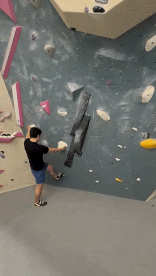

Success
1. The Final Gold Standard

The Breakthrough
This attempt shows you successfully applying the feedback mid-session. You used skeletal structure to hang and precise toe-tips for stability.
Fall
2. The Pumpy Crux (Energy Leak)

Energy Management
When you get tired, your brain reverts to "pull harder" instead of "hang better." You need to fight that instinct and force your elbows straight.
Fall
3. The High Orange Reach

Counterbalance
You lost balance mid-reach because your center of mass was unsupported. Extending your free leg (flagging) would have kept you glued to the wall.